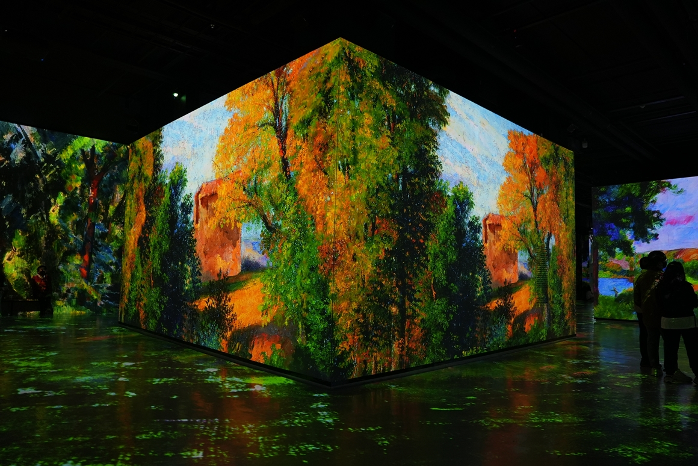

장소 상세보기
|  |
| 번호 | 7 |
|---|---|
| 분류 | 행사 |
| 장소 번호 |
C0007 |
| 장소명 | 빛의 벙커 '세잔,프로방스의빛/칸딘스키' 전 |
| 장소 주요 설명 |
자세한 소식과 티켓 예매는 공식 홈페이지를 통해 확인 바랍니다. |
| 장소 상세 설명 |
태양이 뜨는 마을, 성산에 숨겨져 있던 벙커가 제주의 색을 고스란히 닮은 빛의 갤러리로 변모했다. 이곳은 국가 기간통신망을 운영하기 위한 해저 광케이블을 관리하던 약 900평 규모의 철근 콘크리트 건물이었다. 사용가치를 다해 잊혀가던 중 프랑스 몰입형 미디어아트 AMIEX를 활용할 수 있는 최적의 장소로 결정됐고, 프랑스 외에 최초로 제주에서 선을 보이게 됐다. 프로젝터를 통해 화려한 레이저 그래픽을 콘크리트 벽에 씌워 새로운 공간을 연출하는데, 이번 전시는 현대미술의 아버지로 칭송받는 세잔과, 추상미술의 창시자 칸딘스키의 작품들이 벙커 내부를 가득 채운다. |
장소 상세보기
| 번호 | 19 |
|---|---|
| 분류 | 행사 |
| 장소 번호 |
C0019 |
| 장소명 | 제주민속촌 몬딱 놀당갑 SHOW |
| 장소 주요 설명 |
제주민속촌 몬딱 놀당갑 SHOW 친근하고 유쾌한 제주민속촌을 만나 보실 수 있는 “몬딱 놀당갑 SHOW" 제주민속촌을 방문하는 남녀노소 누구나 재밌게 볼 수 있는 댄스 라이브 퍼포먼스를 시작으로 퓨전 마당극 컨셉의 코믹 뮤지컬, 제주목사 삼추니가 펼쳐진다. |
| 장소 상세 설명 |
■ 행 사 명 : 몬딱 놀당갑 SHOW (부제 : 조선날라리) ■ 공연장소 : 제주민속촌 일원 - 어서옵쇼 : 정문 광장 - 제주목사 삼추니 : 제주영문 - 놀자전 : 산촌~어촌 일대 (놀자전은 공연시간 이외시간에 진행합니다) ■ 축제일정 : ~2023년 3월(예정) ■ 공연시간 : 1회차 10:00 / 2회차 13:00 / 3회차 15:00 (우천시에는 공연이 취소됩니다) |